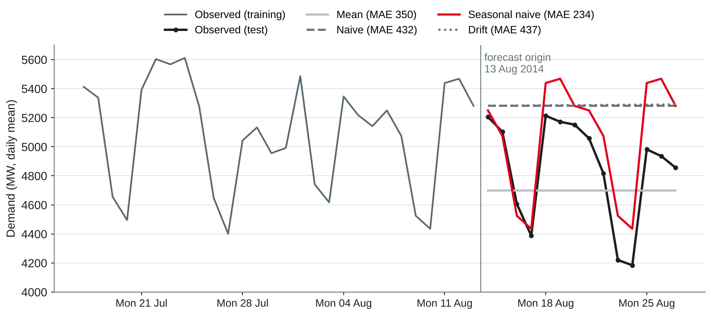
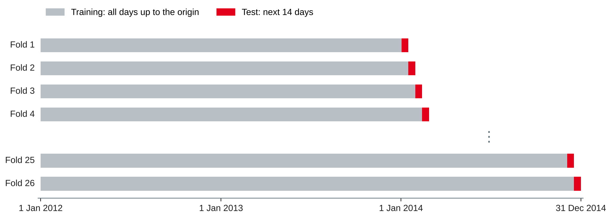
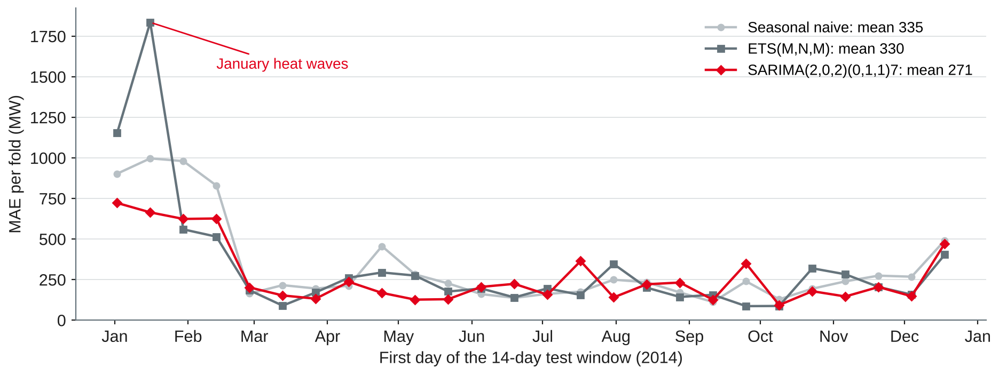

Data Analytics
Baselines · forecast accuracy and time series cross-validation · exponential smoothing · the ARIMA family · energy forecast lab
DHBW Mannheim · Data Science and Artificial Intelligence · Semester 5
Today's question: how well can we forecast the next 14 days from the history alone — and how do we measure "well" honestly?
What, how far ahead, and compared with what
| Question | Lab answer |
|---|---|
| What is forecast? | Daily mean demand (MW) for Victoria |
| Forecast origin | The last day with known data |
| Horizon h | 1 to 14 days ahead |
| Who uses it, for what? | Energy planner: maintenance windows, contracts for the next two weeks |
| What is known at the origin? | Demand history only — no future temperature today |
| What counts as good? | Lower error than a simple baseline, over many origins |
Own compilation based on Hyndman and Athanasopoulos (2021, Chapter 5).
| Method | Forecast for h days ahead | Idea |
|---|---|---|
| Mean | Average of all past values | Future looks like the past on average |
| Naive | Last observed value | Tomorrow like today |
| Seasonal naive | Value of the same season one period earlier (here: same weekday last week) | Next Monday like last Monday |
| Drift | Last value plus the average change per day so far | The trend continues |
Based on Hyndman and Athanasopoulos (2021, Section 5.2).

Own illustration with data from O'Hara-Wild et al. (2022), based on Hyndman and Athanasopoulos (2021, Section 5.2).
Daily demand (MW) in Victoria, Monday 11 to Sunday 17 August 2014:
| Mon | Tue | Wed | Thu | Fri | Sat | Sun |
|---|---|---|---|---|---|---|
| 5,439 | 5,468 | 5,282 | 5,205 | 5,103 | 4,607 | 4,387 |
The next three days were: Mon 5,214, Tue 5,172, Wed 5,152.
Error measures and time series cross-validation
Forecast error: e = y − ŷ (actual minus forecast) on data not used for fitting
| Measure | Formula | Strength | Weakness |
|---|---|---|---|
| MAE | mean(abs(e)) | Easy to explain, in MW | Scale-dependent |
| RMSE | √mean(e²) | Punishes large errors | Scale-dependent, dominated by outliers |
| MAPE | mean(abs(e / y)) × 100 % | Unit-free | Undefined at y = 0, extreme near 0, heavier penalty on negative errors |
| MASE | MAE / in-sample MAE of seasonal naive | Unit-free, works with zeros | Harder to explain |
Based on Hyndman and Athanasopoulos (2021, Section 5.8) and Hyndman and Koehler (2006).
Never shuffle time series rows into random folds: the model would learn from the future it is supposed to forecast.
Based on Tashman (2000) and Hyndman and Athanasopoulos (2021, Section 5.10).

from sklearn.model_selection import TimeSeriesSplit tscv = TimeSeriesSplit(n_splits=26, test_size=14) # 26 × 14 = 364 test days
Own illustration based on Hyndman and Athanasopoulos (2021, Section 5.10) and scikit-learn developers (n.d.).
For each case: which error measure, which horizon, and what is wrong or missing?
Weighted averages that forget the past gradually
| α | Weight of today | yesterday | 2 days ago | 3 days ago |
|---|---|---|---|---|
| 0.3 | 0.30 | 0.21 | 0.15 | 0.10 |
| 0.8 | 0.80 | 0.16 | 0.03 | 0.01 |
Based on Hyndman and Athanasopoulos (2021, Sections 8.1–8.3).
| Component | Options |
|---|---|
| Error | Additive (A) or multiplicative (M) |
| Trend | None (N), additive (A), additive damped (Ad) |
| Season | None (N), additive (A), multiplicative (M) |
| ETS(·,·,·) | Known as |
|---|---|
| (A,N,N) | Simple exponential smoothing |
| (A,A,N) | Holt's linear method |
| (A,A,A), (M,A,M) | Holt-Winters additive, multiplicative |
Based on Hyndman and Athanasopoulos (2021, Sections 8.4–8.6).
from statsmodels.tsa.exponential_smoothing.ets import ETSModel
fit = ETSModel(train, error="mul", trend=None, seasonal="mul",
seasonal_periods=7).fit(disp=False)
fc = fit.forecast(14)| On 2012–2013 (731 days) | (A,N,A) | (A,A,A) | (A,Ad,A) | (M,N,M) |
|---|---|---|---|---|
| AIC | 10,299 | 10,455 | 10,451 | 10,254 |
Own analysis with statsmodels (Seabold & Perktold, 2010) and data from O'Hara-Wild et al. (2022), based on Hyndman and Athanasopoulos (2021, Section 8.6).
Modelling the autocorrelation directly
AR(p): autoregression
Today depends on the last p values: yₜ = c + φ₁yₜ₋₁ + … + φₚyₜ₋ₚ + εₜ
I(d): integrated
Difference d times until the series is stationary (session 11)
MA(q): moving average
Today depends on the last q forecast errors: yₜ = c + εₜ + θ₁εₜ₋₁ + … (up to lag q)
Based on Hyndman and Athanasopoulos (2021, Sections 9.1–9.5 and 9.9) and Box et al. (2015).
| On 2012–2013 | Result |
|---|---|
| Best model | SARIMA(2,0,2)(0,1,1)₇, AIC 10,099 |
| AR coefficients | φ₁ = 1.33, φ₂ = −0.33 |
| Seasonal MA | Θ₁ = −1.00: a fixed weekly pattern |
| Ljung–Box, lag 14 / 28 | p = 0.42 / 0.23: residuals look like white noise |
Based on Hyndman and Athanasopoulos (2021, Sections 9.6 and 9.9) and Ljung and Box (1978); own analysis with statsmodels (Seabold & Perktold, 2010).
Based on Hyndman and Athanasopoulos (2021, Sections 5.7 and 9.10).
| Method | MAE (MW) | RMSE (MW) | MAPE | MASE |
|---|---|---|---|---|
| Mean | 417 | 557 | 9.3 % | 1.35 |
| Naive | 457 | 715 | 10.4 % | 1.48 |
| Drift | 459 | 720 | 10.4 % | 1.49 |
| Seasonal naive (lag 7) | 335 | 559 | 7.1 % | 1.08 |
| Seasonal naive (lag 364) | 316 | 487 | 6.8 % | 1.02 |
| ETS(M,N,M) | 330 | 582 | 7.1 % | 1.08 |
| SARIMA(2,0,2)(0,1,1)₇ | 271 | 418 | 5.8 % | 0.88 |
Own analysis with statsmodels (Seabold & Perktold, 2010) and scikit-learn (Pedregosa et al., 2011); data from O'Hara-Wild et al. (2022).

Own illustration with data from O'Hara-Wild et al. (2022), based on Hyndman and Athanasopoulos (2021, Section 5.10).
Baselines, ETS and SARIMA with time series cross-validation
import numpy as np, pandas as pd
from sklearn.model_selection import TimeSeriesSplit
# y = daily["Demand"].asfreq("D") — from the session 11 lab starter (1,096 days)
def snaive(train, h, m=7):
return np.array([train.iloc[-m + i % m] for i in range(h)])
def evaluate(method, y, h=14, n_splits=26):
rows = []
for k, (tr, te) in enumerate(TimeSeriesSplit(n_splits=n_splits, test_size=h).split(y)):
train, test = y.iloc[tr], y.iloc[te]
e = test.to_numpy() - method(train, h)
scale = np.mean(np.abs(train.diff(7).dropna())) # for MASE
rows.append({"fold": k, "MAE": np.mean(np.abs(e)),
"RMSE": np.sqrt(np.mean(e**2)),
"MAPE": 100 * np.mean(np.abs(e / test.to_numpy())),
"MASE": np.mean(np.abs(e)) / scale})
return pd.DataFrame(rows)
print(evaluate(snaive, y).mean().round(2)) # MAE 334.53, MASE 1.08Own example based on Hyndman and Athanasopoulos (2021, Sections 5.8 and 5.10) and scikit-learn developers (n.d.).
import warnings
from statsmodels.tsa.exponential_smoothing.ets import ETSModel
from statsmodels.tsa.statespace.sarimax import SARIMAX
warnings.filterwarnings("ignore") # convergence notes during refits
def ets(train, h):
return ETSModel(train, error="mul", seasonal="mul", seasonal_periods=7) \
.fit(disp=False).forecast(h).to_numpy()
def sarima(train, h):
return SARIMAX(train, order=(2, 0, 2), seasonal_order=(0, 1, 1, 7)) \
.fit(disp=False).forecast(h).to_numpy()
results = {name: evaluate(f, y) for name, f in
{"snaive": snaive, "ets": ets, "sarima": sarima}.items()}
print(pd.DataFrame({n: r.mean() for n, r in results.items()}).round(2))Own example with statsmodels (Seabold & Perktold, 2010).
Work in pairs on the daily demand series (O'Hara-Wild et al., 2022); keep everything for notebook 3.
Preparation: save today's cross-validation results — they are the baseline for session 13. Refresh gradient boosting in scikit-learn and try worksheet 12.